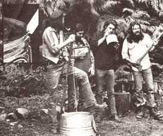

Jam Sessions and Song Swaps
And that's what this column is all about. Down-home music that you can make . . . and the instruments (which, in some cases, you can also make!) to play that music on.
We may also publish some songs, discuss music as a potential home business, run discographies, bibliographies, and/or include whatever other do-it-yourself music topics you'd tike to see.
The important thing is that this is a new column. If you like it, write to me and let me know. If you have some ideas for this feature, let me know that. I'm open to any suggestions or information you care to contribute. I'll even try to answer your questions about downhome music . . . but-both for the benefit of all MOTHER'S readers and to ease my correspondence load-I'll deal with those questions, whenever possible, here in this column . . . rather than in personal letters.
Address your correspondence-for this column and this column only-to Marc Bristol, 3172 N.E. 180th, Place, Duvall, Wash. 98019.
Have you ever gone to a musical concert and noticed how much fun the performers seemed to be having? Well, you could be having that fun yourself . . . in your own living room . . . for free! Just start makin' your own music-preferably with friends-instead of shellin' out good money so that someone else (professional musicians) can have all the fun.
Do-it-yourself entertainment is much the same as do-it-yourself building a house, do-it-yourself growing a garden, do-it-yourself raising of livestock, or do-it-yourself anything else: It's simply more satisfying when you do it with your own two hands than when you pay someone else to do it for you.
There are other benefits to holding a down-home jam session in your front room or out on the porch too: [1] As I've already mentioned, you'll be saving money, [2] you'll be staying off the highway and the streets, [3] you'll be building up priceless relationships with interesting folks right there in your own neighborhood, and [4] you'll never need to hire a babysitter or otherwise worry about what to do with the children ( sing the youngsters to sleep and then knock yourself out with a few of your favorite tunes).
Of course, there's no law which specifically states that you have to wait for your regular evening social get-togethers if you want to have a session of music-makin'. Not if you have a family. Remember: A jam is nothin' but two people (any two people) or more gettin' together for the purpose of committin' music. Any kind of music.
My son and I started singing together when he was only 1-1/2 years old. (He was riding on the back of my bicycle as I pedaled up the mountain road we lived on and he joined in on A Bicycle Built for Two that I was singing as I watched the daisies and other wildflowers we passed wave musically in the breeze.)
Since then, my boy has taken up playing the jug (there's a "rude noises" stage that youngsters go through that makes it especially easy to introduce them to jug playing). He also likes shakers and percussion instruments and-now that he's four-he and his friends are generally thrilled when I set up the drums and then strum something on the guitar for them to drum along with.
(And I'm thrilled when my son comes home from preschool singing a new song that he's learned in just one day. It means that he really likes music and he really liked that tune . . . which will probably get added to our repertoire of "riding in the car" songs. And if you didn't already know it, there are songs for riding in the car, for walking, hoeing, pedaling, rowing, pushing, pulling, laughing, crying, lying in the shade, and Lord knows what all. There's a song-or several-for most any activity. Use 'em. Make up your own!)
But back to excuses for gatherin' your friends and neighbors together for a little pickin' and grinnin'. You don't really need an excuse. Just do it. And if you do need an excuse the first time or two you wanner throw one of these shindigs, just hang your playin' and singin' onto one end or another-or both!-of a few potluck dinners.
"Bring a dish" suppers are so easy to stew down into a musical jam. In the first place, the cooks in the crowd get to show off their talents too . . . which guarantees satisfaction on several levels. And, in the second, the conversation at such events usually takes on the valuable aspects of a community newsletter.
Need manure for your garden? Looking for a good used truck? Have you got your eyes peeled for some baby clothes for that little one you're expecting? Or do you have manure, a used truck, or baby clothes that you wanna get rid of? A potluck dinner/musical jam fest is the place for buyers and sellers and swappers of good will to get together and strike their bargains.
The whole idea, in other words, is just gettin' together and enjoyin' each other's company and benefiting from the experience. And nothing draws people together faster or better than a little homegrown music. Get your neighbors together, join them, and share some good times and doit-yourself music with each other. Heaven on earth already exists . . if you know how to open your eyes to it!
OK. I've got you convinced. You're gonna have a hoedown, a hootenanny, a musical get-together, a jam session, whatever you want to call it at your place or in someone else's home. Here's a little tip: If you want that evening to be a real ripsnorter . . . take all your instruments to the get-together.
In the first place, it'll make the hoot a whole lot more valuable for you and your musical development. By switching off from one instrument to another as the evening goes on ( or, sometimes, during a single song), you'll quickly pick up different points of view about musical arrangement. That is, once you've tried several different parts, you'll find it easier to keep the way they all fit together in mind while you're later playing any one part.
If you usually play lead guitar, then . . . try switching off to washtub bass or a set of bongo drums or the spoons or a mandolin or any one of a dozen other instruments for a few numbers. Who knows? You may uncover a hidden talent. At the very least, you're sure to increase your awareness of the whole sound picture your group is painting.
And here's an illustration of another reason you-and everyone else-should each bring more than one instrument to your jam sessions: I've seen a few hoots that more or less resembled a congregation of gunfighters at the local saloon, when six or eight people showed up . . all toting a single guitar case and each secretly wondering how she/he might manage to dominate the session or maybe even just squeeze one favorite song in edgewise during the coming confrontation.
That's why I took up playing the washboard, mandolin, banjolin, bongos, pocket change, and washtub bass. Not only do I find the music at one of our "pickup" sessions more pleasing when a percussion instrument (or anything that has a different tonal range from a guitar) is added to the blend . . . but I also avoid the feeling of frustration that one gets wondering whether there's really room for yet another guitar in a sixguitar band.
Obviously, problems of competition and redundancy of sound need never arise if everyone who plays at a back. yard musical get-together brings along an extra instrument or two or three. And if they do, you'll reap another bonus too: There'll always be something handy for the musicians who drop in unexpectedly-or the folks who've never tried to make music before-to pick up and play. You'll be surprised at the amount of entertainment, satisfaction, and downright fun such unexpected additions can add to your hoedown.
And don't overlook the instruments you've brought without-maybe-even knowing that you were bringing them. Thinks like change and keys, for instance. Loose change in one pocket and a handful of keys in the other make an ideal instrument that you can "play" and "dance with" at the same time. I don't remember whether I discovered this fact while listening to the radio or as I was watching a bunch of street musicians . . . but I do know it works. And if you're as compulsive a player of music as I am, that's a good bit of knowledge to have.
Of course, you can even put on a pickup jam session without any "real" instruments at all . . if you're not too proud to bang on pots, pan lids, jars, or water glasses (you can "tune" the last two, you know, by varying the amount of water you put in 'em). One night a bunch of us held just such a hoot out on the porch after a long, hot summer day. We never did find out what the neighbors thought about the whole affair . . . but we sure did have a good time! (Remember that the next time you have a get-together and everyone forgets to bring his or her guitar.) On another occasion, when he was faced with the prospect of sitting through an evening-long session without his drums, a friend of mine "manufactured" a whole set of percussion instruments on the spot out of what was left of the dinner dishes . . . and so astounded everyone at the hoot that it soon became a oneman concert!
And that's the way it should be. Everyone at a hoot should be encouraged to participate in his or her own way and the texture of such gettogethers should change and ebb and flow as their participants learn new instruments, experiment with different ideas in music, pick up new songs, originate new tunes, and otherwise develop musically.
So hang loose. Make sure that no one person or group of people always dominates the festivities. Give everyone a chance to join in. Sure, it'll probably be up to a few "experienced" players (at least in the beginning) to get the ball rolling. But those "old hands" should go out of their way to pass their instruments around ("Here. YOU play this.") or, at the very least, let others start some of the tunes. Pretty soon the spirit will catch on and everybody at the party will be contributing something. Maybe even writing a whole new song of his or her own!
That's a sign that your hoedown is really cookin' and-if you're one of the better musicians at the fest-that, perhaps, you should start layin' back a little and just holdin' down the rhythm. Or playing fills and breaks. Or adding a harmony vocal. There's no need for you to do whole arrangements on guitar, voice, and harmonica when everyone in the group is joining in. Relax. Enjoy what the others are doin'. There's a real high there-for everyone-when you all start gettin' tuned in on the same vibrations!
And there's something else in it for you, too, when you don't try to take over the whole show: While you're having all that good, honest, REAL fun . . . you'll also be increasing your musical awareness and expertise in a number of ways. You'll pick up a new guitar lick here . . . notice a new way to beat out rhythm on a percussion instrument there . . . learn the words to a song you didn't know from that individual . . . maybe even originate a new melody or tune of your own or with someone else.
Don't let all this information get away from you! Start a notebook of song chords and fingerings and words and other musical knowledge and keep it by your side during each jam session you attend. That way it'll be handy when you want to add something . . . or someone else wants to copy information from your book for his or her own use .. . . or a real beginner just needs help with the words to a tune at a sing-along.
I find that I've enlarged my repertoire of songs a great deal faster since I've started taking my notebook to sing-alongs. Without the book, I'm liable to forget a new tune almost as soon as I hear it. But if I immediately write the song's words down just once. . . I can usually remember them afterwards without ever referring to the copy again.
And that's important because new songs-not necessarily yew new, just new to you!-are the lifeblood of music. The next time you find yourself losing interest in your music or noting a lack of progress in your abilities . . . get out to a hoot and add another batch of songs to your repertoire. It's like learning to fly each time you pick up a new tune!
Or any kind of useful information, for that matter. Wanna learn how to play a particular "lick"? If you see someone else do it at a party, don't be afraid to ask how it's done. Likewise if you need to know how to repair an instrument, etc. It's a real thrill to make leaps forward, and those leaps frequently come easy at a musical get-together.
It's exciting, too, to share what you know at such fests. The more you give, the more you get back and jamming-no matter what form it takes-is the most effective way I know of for both teaching and learning what music's all about.
Get together with some other folks and give it a try. After all, music's first name is people ("It's all folk music . . . I ain't never heard no hosses singin' it." Louis "Satchmo" Armstrong), and the more individuals you get together with to pick and sing-and the more often you do it-the more you'll learn and the faster you'll become the musician you want to be.
|
 Marc Bristol and other Washington State grassroots musicians wail away on a gutbucket, washboard, and jug (the axe is a gag). For Marces original homegrown music column?which featured gutbucket, washboard, jug, kazoo, musical saw, and spoons ""makin' and playin' ''instructions?.see MOTHER NO. 50. Inset shows gut bucket ""notch and bevel""details |
|
|